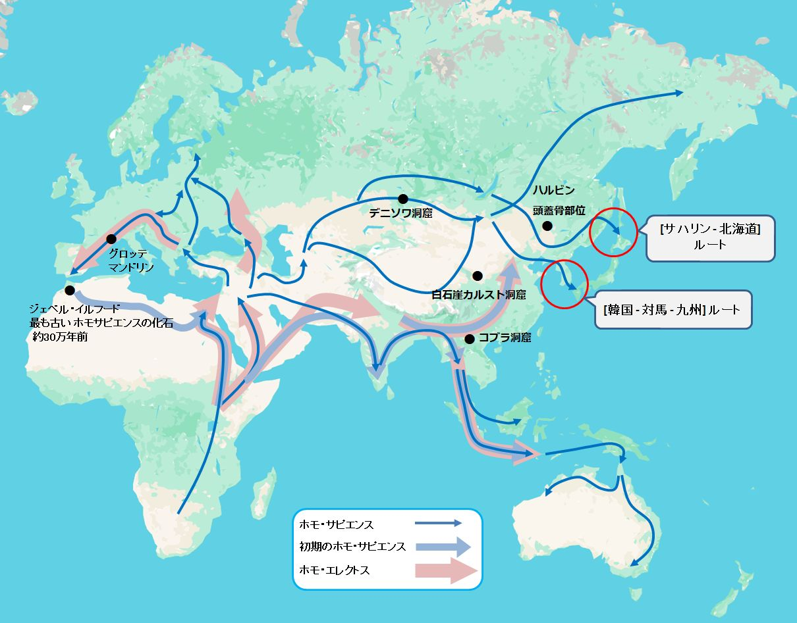

38000年前の航海民
「Googleマップで2万年前の日本地図が見える、すごい使い方│小名木善行」 というYouTubeを見ました。 google mapで直接表示させるのではなく、 2万年前は現在より、140m程海抜が低く大陸棚が地表に現れていたことを想像してほしい...そのような内容だったと記憶しています。 かなりアバウトな説明でしたが、発想としては面白いなと思いました。
話はがらりと変わります。 相当前なのですが、縄文時代よりも前に伊豆諸島の神津島から 黒曜石が伊豆半島や房総半島に船で運ばれていたという記事を読んだ記憶があるのです。 妻が新聞で件の記事を読み、 「すごいね、大昔に神津島から黒曜石が船で伊豆や房総に運ばれていたんだって。」 と、私に伝えました。 私も渡された記事を読みました。 詳しくは記憶していないのですが、 何万年も前に神津島から黒曜石が船で日本各地に運ばれていたという内容だったと思います。 その時は、「話半分」、或いは「ガセ」ではないかという気持ちが強かったのですが、 何故か、いつまでも頭から離れずに残っていました。
「Googleマップで2万年前の日本地図が見える」を見て、 もしかしたら神津島の黒曜石は海抜が下がっていた時期に、 船を使わずに運ばれたのではないかと思いました。
もやもやした気持ちを吹っ切ろうと思って、"神津島", "黒曜石" を手始めに、いろいろと調べて見ました。 冒険の始まりです。
1. 時代は38000年前
参考として、幾つかのサイトを上げておきます。
神津島石蔵公式サイト（Stone Warehouse） | 神津島のパワー ...
「石」が好きすぎて…島に移住「とにかく飽きない」人生 ...
何万年も前とうっすら記憶していた時期は、38000年前を指していたことが分かりました。 新聞で読んだ記事は「話半分」でも「ガセ」でもなく、本当のことを書いていたのだと理解することができました。
2. 黒曜石は船で運ばれていた
池谷氏によれば、38000年前という時代は、旧石器時代後期にあっても比較的温暖であり、 海抜は今より80m程低かったとされています。しかし、80m低くても神津島と伊豆半島の間には、 水深が800mに達するところがあり、黒曜石は船で運ばざるを得なかったと指摘されています。
当時の地理的状況を調べたいと思い、過去の海抜の変化と等深線を提供しているサイトを探しました。
海抜の変化については、 NOAA(National Oceanic and Atmospheric Administration) Paleoclimatology(米国海洋大気庁 古気候学)から、データを検索しました。
入手したデータソースは以下の通りです。 このファイルには900万年前から現在までの海抜データが千年単位で記録されています。
以下の図は42000年前から現在までの海抜をプロットしたものです。

図2-1 : 42000年前から現在までの海抜
図2-1 の薄青色の帯の左端が38000年前の海抜を示しています。 確かに38000年前の海抜は、現在より80mほど低かったことが分かります。 薄青色と薄緑色の2つの帯については、xxxで説明します。
次は等深線です。こちらは、 GEBCO(The General Bathymetric Chart of the Oceans) data downloadにアクセスし、 目的の海域のデータを取得しました。ただし、 このデータのままでは "Google Earth Pro" にインポートすることができなかったので、 Geographic Information System の1つである QGISダウンロードサイトからデスクトップ版をインストールして、 "Google Earth Pro" にインポートできるデータに変換しました。 QGISでは、水深80m, 120m, 140m の3つのデータセットを作り、 "Google Earth Pro" にインポートしました。
以下の図は伊豆半島、神津島、房総半島を含む範囲の海抜が80m低かった状態を示しています。 陸地の周りの白い等深線が、当時は陸地だったことを意味します。 38000年前は、現在より陸地の範囲が広かったことが分かります。註1

図2-2 : 38000年前の伊豆半島、神津島、房総半島を含む範囲
図2-2 から分かるように、当時の神津島は西側の小さい島と陸続きになっています。 黒曜石は、現在は"恩馳島（おんばせ）"と呼ばれているこのエリアで産出されたとされています。
海抜が現在より80m低くても、神津島と伊豆半島は最短距離を結んでも、40km弱の距離があります。 黒曜石を運ぶには船が必須であったことが分かります。
この運搬ルートについて西谷氏の特集論文は、 海流の影響などを提示して、船を操るには高度な航海術が必要であったと述べられています。 特に強調されていたのは、伊豆半島から神津島へ、神津島から伊豆半島への往復航海が行われていた点についてです。
ところで、38000年前の日本はどういう状況だったのでしょうか。 東京都立大学の出穂雅実氏によると 日本列島に最初に渡来した現生人類とは？の中で、次のように述べられています。 「日本列島にある最も古い遺跡は、3万8000年前に出現しています。 また、3万8000年前に位置づけられる遺跡が、東北から琉球半島までの広い範囲に分布していますから、 この時期に現生人類の日本列島への植民が果たされたのは確実といえます。」
池谷氏も特集論文の中で次のように述べられています。 「...約3万8000年前に遡るものであった。列島に現生人類が到達し, 後期旧石器時代が開始された時期にほぼ重なる。 つまり彼らは列島へ展開するのとほとんど同時に, 伊豆半島 - 神津島間の往復航海を果たしていることになるのである。」
ここで、38000前の日本全土と周辺の地図を示したいと思います。
図2-3 : 38000年前の日本全土と周辺の地図
80mの白い等深線の範囲内が当時の陸地です。 人類が日本列島に到達したと思われるルートも示しています。
②の宗谷半島については北海道とサハリンが陸続きであり、サハリンは大陸とつながっています。 しかし、北海道と本州は津軽海峡(③)で分断されています。
一方、①の千島(クリル)列島と⑤の[台湾 - 琉球諸島] ルートは、ほぼ島毎に分断されていることが分かります。 ④の[朝鮮半島 - 対馬 - 九州] ルートもしっかり海で隔てられています。
神津島の黒曜石運搬をメインに据えると、 伊豆半島への到達ルートは、いずれも船を使わざるを得ないことが分かります。 船で到達したとすると、以下の3つのルートに絞り込まれると思います。
③の津軽海峡超えは、①[千島(クリル)列島] ルートか、 ②[宗谷海峡] ルートから北海道に渡った後、海峡を船で越えたと考えられます。 自然なルートとしては、船を使わずに北海道へ到達できる②ではないでしょうか。
図2-4 は津軽海峡超えのルートを2つ示しています。距離にすると11～13kmほどになります。
図2-4 : 津軽海峡超えのルート
④の[韓国 - 対馬 - 九州] ルートは、 [韓国 - 対馬] が最短でも40km強になります。 その後は、当時は島であったと考えられる地点を経由して九州に至ります。 最初の40kmは相当な距離ですが、神津島と伊豆半島の距離が約40kmなので、 往復航海を行ったと考えられる航海民にとっては。特に問題はなかったのかもしれません。

図2-5 : 韓国 - 対馬 - 九州 ルート
⑤の[台湾 - 琉球諸島 - 九州] ルートは、明らかに最難関ルートと思われます。 台湾から琉球列島に一番近い与那国島でも100kmを超えます。
図は[台湾 - 琉球列島] ルートを示したものです。 島から島への距離は、割愛していますが、宮古島から沖縄本島までは200kmを超えています。

図2-6 : 台湾 - 琉球列島 ルート
ここまで38000年前に船で日本列島に到達した、航海民のルートを調べてみました。 船で渡ることが容易と考えられるのは ③, ④, ⑤ の順になります。
しかし、国立科学博物館人類研究部人類史研究グループ長であった 海部陽介 氏(現在は東京大学総合研究博物館で研究を続けられています)は 3万年前の日本列島への大航海を当時の材料と道具で徹底再現の中で、 [台湾 与那国島] ルートの実証実験を行って、2019年7月に成功されています。 実証実験は、当時手に入ると考えられた道具のみを使って船を作り、渡航したものでした。

図2-7 : 「 3万年前の日本列島への大航海を当時の材料と道具で徹底再現」より引用
私見になりますが、黒曜石のように、鋭利な道具に加工できる素材は、 当時としては大変貴重なものだったと思います。 このような素材を探して、航海術に長けた人々が日本列島に渡って来たのではないでしょうか。
伊豆半島と神津島の距離が約40kmであったこと。 そして、西谷氏が指摘される 「...約3万8000年前に遡るものであった。列島に現生人類が到達し, 後期旧石器時代が開始された時期にほぼ重なる。 つまり彼らは列島へ展開するのとほとんど同時に, 伊豆半島 - 神津島間の往復航海を果たしていることになるのである。」 を考えると、航海民は相当自由に船を扱えることが必要ではなかったかと思えます。
更に海部氏は 「人類は謎の存在なんです」――人類進化学者が「3万年前の航海」に挑む理由の中で、 以下のように述べられています。 「最初に日本に到達したとされるのは、3万8000年ほど前、 朝鮮半島から対馬を経て北部九州へ至った「対馬ルート」だ。 そのあとに、台湾から琉球列島を島伝いに北上する「沖縄ルート」（約3万5000年前）、 大陸の北側からサハリンを通って北海道へと南下する「北海道ルート」（約2万5000年前）が続いたと考えられる。」
ご自身の研究によるものか、これ以上は追いかけきれなかったのですが、 海部氏の考察に従えば、38000年前に、日本に到達した航海民は②の [韓国 - 対馬 - 九州] ルート になります。
西谷氏の特集論文を再度引用します。
「...約3万8000年前に遡るものであった。列島に現生人類が到達し, 後期旧石器時代が開始された時期にほぼ重なる。 つまり彼らは列島へ展開するのとほとんど同時に, 伊豆半島 - 神津島間の往復航海を果たしていることになるのである。」
以上を考慮すると、38000年前に航海民は ④の [韓国 - 対馬 - 九州] ルート から日本に渡り、 ほぼ同時期に 伊豆半島 - 神津島 間の往復航海を行っていたということになります。 [韓国 - 対馬] の40kmを渡ることができた航海民であれば、 [伊豆半島 - 神津島] の往復航海ができたのではないかという考察は妥当ではないかと考えられます。
3. 2万年前は現在より140mも海抜が下がっていた
図3-1 は海抜が現在より120m低かったときの日本全土と周辺の地図です。

図3-1 : 20000年前の日本全土と周辺の地図 海抜が現在より120m低かった場合
図3-2 は海抜が現在より140m低かったときの日本全土と周辺の地図です。
図3-2 : 20000年前の日本全土と周辺の地図 海抜が現在より140m低かった場合
海抜が120m低かった場合と140m低かった場合で、それほど差異はないように思えたのですが、 140m低いと津軽海峡が地続きになることに気づきました。 海部氏は津軽海峡を超えたのは25000年前と記されています。 海部氏の説に従えば、津軽海峡超えには船が使用されたことになります。
ここから先は20000年前は海抜が140m低かったと仮定して話を進めたいと思います。 海抜が140m低いと、日本海は巨大な湖になっていることが分かります。 この時期、大陸から日本へは [サハリン - 北海道 - 本州] ルートと、 韓国以南からは容易に九州に渡るルートが開かれていたことになります。
「Googleマップで2万年前の日本地図が見える、すごい使い方...」では、 「日本列島に人類が渡って来るのに船は必要なく、陸続きで渡って来られた」と説明されています。 確かに20000年前は歩いて渡って来れたのです。
図2-1 : 42000年前から現在までの海抜を見ると38000年前から20000年前までは ほぼリニアーに海抜が下がっていることが分かります。 20000年前前後は最終氷河期(wiki)と一致します。 おそらくこの時期、大陸から日本へ多くの人々が渡って来たものと考えられます。
日本旧石器学会(JPRA: Japanese Palaeolithic Research Association)の 日本列島の旧石器時代遺跡では、35000年前から10000年前までの遺跡のデータを辿ることができます。
実は、西谷氏の「世界最古の往復航海 - researchmap」の中に気になる記述があります。以下、その引用です。
実は、西谷氏の「世界最古の往復航海 - researchmap」の中に気になる記述があります。以下、その引用です。 「井出丸山遺跡に始まる神津島産黒曜石の中部・関東地方への供給は, 3万8000年へ3万4000年前の約5000年間にわたる。」
縄文時代には再び、神津島産の黒曜石が各地の遺跡から出土しているようです。 東京都神津島、恩馳島産黒曜石と砂糠崎産黒曜石のフィッション・トラック年代では 「縄文時代になると、伊豆諸島をはじめ南関東・東海地方において、 石鍬やその未成品として多くの恩馳島系の黒曜石製遺物が発見されている。」と記されています。 ただ、縄文時代というのはwikipediaでは 14000年位前からとなっています。とすると、20000年近く、神津島から黒曜石は運ばれていないことになります。 この空白の2万年を追いかけてみたのですが、これはと思えるwebページを見つけることができませんでした。
以下に "神津島 黒曜石 航海 2万年前" で検索してヒットしたページを上げておきます。
2万年前、神津島は黒潮文化圏の中心だった 残念ながら、客観的なデータが示されていません。
黒曜石分析から解明された新・海上の道－列島最古の旧石器文化を探る④－では 「約1万8,000～2万年前の旧石器時代に、 太平洋上に浮かぶ伊豆諸島・神津島の黒曜石が武蔵野台地の遺跡で使用されていた事実であった（鈴木1971ab）」 という記述があるのですが、これ以上先に進むことができませんでした。
別の切り口として、2万年前後前に神津島から黒曜石が本州に運ばれなかった理由を考察しているページがあります。 Rinko_Helios氏の「神津島の黒曜石、いつから本土にやってきた？」=後期旧石器時代の田名向原遺跡でふと湧いた疑問=では 「なぜ2万年前の田名向原遺跡の黒曜石に神津島産がなかったのか？の答え（私的作業仮説） 『愛鷹山麓 vs 相模原という場の違いではなく、時代（2万年前 vs 3万4千年前）の違いであろう。 2万年前は最終氷期の最寒冷期で平均気温が現在よりも６~７℃低かった。 そのため、海難のリスクが高まり神津島への黒曜石獲得シャトル航海を断念（縮小）した。」 という内容です。なるほどという内容です。 しかし、これは数千年単位の事象であり、 2万年の空白を説明するには難しいのではないかと思います。
このように、2万年の空白の説明はかなり難しいと考えられます。 今後の考古学の進展に期待したいと思います。
4. 4万年前まではホモサピエンスだけではなかった
一方、海部氏は "「人類は謎の存在なんです」――人類進化学者が「3万年前の航海」に挑む理由" の中で次のように述べられています。
「ホモ・サピエンスの時代の前には、アジアには多様な原人や旧人がいました。 ところが今の時代は僕らホモ・サピエンスしかいない。...僕らは謎の存在なんです」 その後で、実験航海を行った目的として、 「なぜなら原人・旧人も、広い海を渡れなかったから。 本格的な海洋進出を果たしたのはホモ・サピエンスだけ。 では彼らにどんな能力があったから、海を渡れたのか。 それを知るためには、実際に当時の技術をできるだけ再現して舟を作って、渡ってみることです」 と述べられています。氏は最初に日本列島に渡ってきた人類をホモ・サピエンスとしています。
日本列島に渡ってきた人類を調べている最中に、National Geographicの How a molar, jawbone, and pinkie are rewriting human historyなる記事に接しました。 直訳すると「臼歯、顎骨、小指が人類の歴史を書き換えている」というタイトルになります。
記事では、ホモ・サピエンスは地球上で最後の人類であり、アフリカから広がる際、 他の人類と交わることなく進化を続けて今日に至るとする定説が大きく揺らいでいることが紹介されています。 各地の遺跡で発掘される臼歯、顎骨、小指などのDNA分析の結果が今までのホモ・サピエンス像を揺るがせているというのです。
現在の私たちは誰もがネアンデルタール人の遺伝情報を持っていることを示し、 それ以外の人類の遺伝情報が格納されている事実も説明しています。
以下の図は National Geographic の「臼歯、顎骨、小指が人類の歴史を書き換えている」の中で使用されている図を 参考にしてアレンジしたもので、 ホモ・サピエンスのヨーロッパ、アジアへの伝播の経路を示しています

図4-1 : ホモ・サピエンスのヨーロッパ、アジアへの伝播
図の中の "●" がホモ・サピエンスとは異なる人類の遺骨などが見つかった地点を示しています。
遺骨にはDNAの分析が可能なものも含まれ、ホモ・サピエンスが他の人類と交わりながら、各地に伝播して行ったことが 紹介されています。
図4-1ではホモ・サピエンスが日本列島へ到達した経路として、サハリンから北海道へ進入したルートと、 [韓国 - 対馬 - 九州] ルートが示されています。
海部氏は [サハリン - 北海道] ルートは、25000年前と推定されていますが、 [韓国 - 対馬 - 九州] ルートは38000年前と考えられています。
このページは38000年前に神津島の黒曜石を伊豆半島へ運んでいた航海民について考察しています。 従って、図4-1では [韓国 - 対馬 - 九州] ルートが重要になってきます。 遷移図を辿っていくと、「デニソワ洞窟」を経由した可能性が出てきます。
デニソワ人と特定される骨はつい最近、コブラ洞窟で見つかった
デニソワ洞窟で発見された骨のDNA分析の結果から、 現代人もそのDNAを受け継いでいることが分かって来ていることを、 National Geographic が Multiple lines of mysterious ancient humans interbred with usで紹介しています。 この人類はデニソワ洞窟で見つかったので、「デニソワ人」と呼ばれています。
記事は、デニソワ人のDNAはパプアニューギニアのパプア人がに多くは、洞窟で発見された骨のDNA分析の結果から、 現代人もそのDNAを受け継いでいることが分かって来ていることを、 National Geographic が Multiple lines of mysterious ancient humans interbred with usで紹介しています。 この人類はデニソワ洞窟で見つかったので、「デニソワ人」と呼ばれています。
== 脚注 ==
[1.]
38000前から現在までの間に様々な地殻変動があったと考えられます。 従って、当時の日本を現在の日本の姿で置き換えられるのかという疑問があります。 日本列島の生い立ちについて書かれているサイトを少し調べてみたのですが、 10万年前から2万年前までと諸説あり、絞りきることはできませんでした。 今回提示した図は、現在の日本列島をベースに等深線を加えたものであることに注意して下さい。